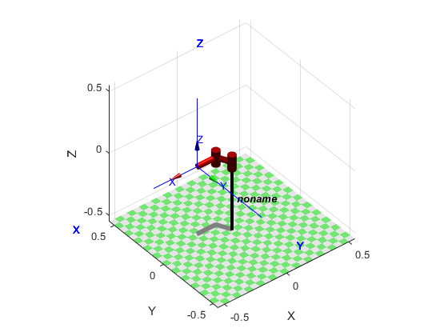
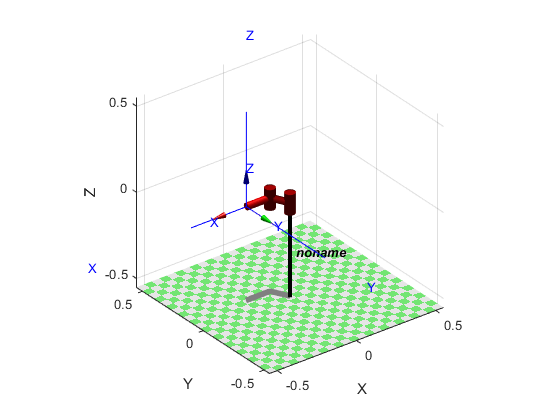
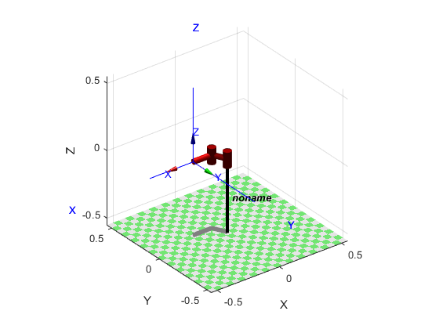

Contents
clc,clear,close
p = [-.2 .1];
DH = [0 0 0 pi/2;
pi/2 0 .3 pi;
pi/2 0 0 pi/2;
0 .15 0 0];
DH = flip_rows(DH);
L(1) = Link(DH(1,:),'modified','revolute');
L(1).qlim = [30 330]*pi/180;
L(2) = Link(DH(2,:),'modified','prismatic');
L(2).jointtype = 'P';
L(2).qlim = [.1 .4];
L(3) = Link(DH(3,:),'modified','revolute');
L(3).qlim = [-45 225]*pi/180;
robot = SerialLink(L);
T_3T = transl(.15,0,0);
robot.tool = T_3T;
teach
clc
T0G = transl(-.2,.1,0)*trotz(pi);
mask = [1 1 0 0 0 1];
q0 = robot.getpos()
q = robot.ikine(T0G,'q0',q0,'mask',mask)
figure
robot.plot(q)
hold on
trplot(T0G)
q0 =
-2.6779 0.1118 2.6779
q =
-2.6779 0.1118 2.6779
 
Prob 3
syms x y phi q1 q2 q3
DH = [0 0 0 q1;
pi/2 0 q2 pi;
pi/2 0 0 q3;
0 .15 0 0];
T04G = transl(x,y,0)*trotz(phi);
T34 = transl(.15,0,0);
T03G = T04G * inv(T34)
T01 = modDH2(DH(1,:));
T12 = modDH2(DH(2,:));
T23 = modDH2(DH(3,:));
T34 = modDH2(DH(4,:));
T03 = T01*T12*T23
eq1 = x - (3/20)*cos(phi) == q2*sin(q1);
eq2 = y - (3/20)*sin(phi) == -q2*cos(q1);
[q1sol,q2sol] = solve(eq1,eq2,q1,q2);
q1sol = simplify(q1sol);
q2sol = simplify(q2sol);
T03G =
[cos(phi), -sin(phi), 0, x - (3*cos(phi))/20]
[sin(phi), cos(phi), 0, y - (3*sin(phi))/20]
[ 0, 0, 1, 0]
[ 0, 0, 0, 1]
T03 =
[ sin(q1)*sin(q3) - cos(q1)*cos(q3), cos(q1)*sin(q3) + cos(q3)*sin(q1), 0, q2*sin(q1)]
[- cos(q1)*sin(q3) - cos(q3)*sin(q1), sin(q1)*sin(q3) - cos(q1)*cos(q3), 0, -q2*cos(q1)]
[ 0, 0, 1, 0]
[ 0, 0, 0, 1]
3c
clc
p = [-0.2 .1 pi];
x = p(1);
y = p(2);
phi = p(3);
q2_p = sqrt((x-(3/20)*cos(phi))^2 + (y-(3/20)*sin(phi))^2);
q2_n = -sqrt((x-(3/20)*cos(phi))^2 + (y-(3/20)*sin(phi))^2);
q1_p = atan2((x-(3/20)*cos(phi))/q2_p,(-y+(3/20)*sin(phi))/q2_p);
q1_n = atan2((x-(3/20)*cos(phi))/q2_n,(-y+(3/20)*sin(phi))/q2_n);
q3_p = atan2(-sin(phi),-cos(phi)) - q1_p;
q3_n = atan2(-sin(phi),-cos(phi)) - q1_n;
q_p = [q1_p q2_p q3_p]
q_n = [q1_n q2_n q3_n]
T04 = robot.fkine(q_p)
robot.plot(q_p)
hold on
T0G = transl(-.2,.1,0)*trotz(pi);
trplot(T0G)
q_p =
-2.6779 0.1118 2.6779
q_n =
0.4636 -0.1118 -0.4636
T04 =
-1 0 0 -0.2
0 -1 0 0.1
0 0 1 0
0 0 0 1
